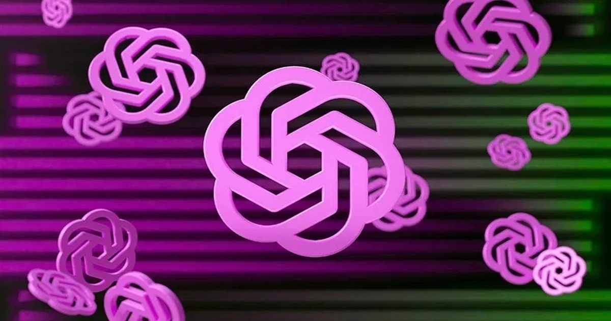

OpenAI GPT-6.2 Astra и Sol в рейтинге DesignArena: что показывают тесты для геймдева
Новые языковые модели OpenAI GPT-6.2 Astra и GPT-6.2 Sol продемонстрировали высокие результаты в бенчмарке DesignArena, оценивающем способности ИИ к разработке игр. Изначально они заняли первое и третье места, но к 22 ноября сместились на вторую и четвёртую позиции соответственно из-за активности конкурентов.
Как работает оценка в DesignArena
DesignArena — это платформа для систематического тестирования больших языковых моделей на задачах, связанных с проектированием и разработкой игр. Тесты охватывают генерацию кода, проектирование механик, балансировку геймплея и работу с технической документацией. В отличие от общих бенчмарков, здесь оценивается способность модели удерживать контекст сложной интерактивной системы на протяжении длинной сессии.
Методология предполагает запуск серии сценариев, где модель выступает в роли разработчика: пишет прототипы, исправляет ошибки, реагирует на изменение требований. Результаты ранжируются по совокупности метрик качества кода, соблюдения архитектуры и креативности решений. Это позволяет сравнивать модели в условиях, приближенных к реальной производственной задаче, а не к абстрактным вопросам.

Результаты GPT-6.2 Astra и Sol
На момент публикации результатов GPT-6.2 Astra показала лучший агрегатный балл, опередив всех остальных участников, а GPT-6.2 Sol вошла в тройку лидеров. Высокая позиция Астры обусловлена устойчивой генерацией работоспособного кода на этапах прототипирования и рефакторинга. Сол проявила себя в задачах на проектирование нестандартных игровых механик и балансировку числовых параметров.
Однако лидерство оказалось нестабильным: в течение нескольких дней другие модели улучшили свои показатели, потеснив новинки OpenAI. К 22 ноября Астра фиксируется на втором месте, а Соль — на четвёртом. Такая динамика типична для быстро развивающегося сегмента: небольшие обновления весов или изменение стратегии промптинга могут существенно сдвинуть рейтинг.

Что означает конкуренция для отрасли
Тесная борьба в верхней части таблицы DesignArena сигнализирует о зрелости технологий: разрыв между лучшими моделями становится минимальным, а выбор инструмента смещается в плоскость удобства интеграции, стоимости инференса и поддержки специфических фреймворков. Для студий разработки это значит, что привязка к единственному провайдеру теряет смысл.
Одновременно растёт значение специализированных бенчмарков вроде DesignArena. Общие тесты на рассуждение или знание фактов не предсказывают качество работы с игровым кодом, где важны детерминизм, соблюдение инвариантов движка и понимание временной логики. Платформы профильного тестирования становятся основным ориентиром при закупке ИИ-ассистентов.
Вопросы к внедрению в продакшн
Несмотря на высокие баллы в тестах, переход от бенчмарка к ежедневному пайплайну требует проверки на реальных кодовых базах, совместимости с используемыми движками и системами контроля версий. Модели могут генерировать синтаксически верный, но архитектурно чужеродный код, что увеличивает нагрузку на код-ревью и рефакторинг.
Важным фактором остаётся предсказуемость поведения при итеративной разработке: как модель реагирует на правки гейм-дизайнеров, сохраняет ли она контекст на длинных сессиях, не вводит ли регрессии в уже работающие подсистемы. Ответы на эти вопросы дают только пилотные проекты в конкретной команде с реальными задачами.
Коротко: GPT-6.2 Astra и Sol подтвердили высокий уровень возможностей в задачах разработки игр, но удержать лидирующие позиции в динамичном рейтинге DesignArena не удалось. Конкуренция между топовыми моделями сближает их качество, перенося фокус выбора на инженерное удобство и стоимость владения. Для команд разработки ключевым остаётся тестирование кандидатов на собственных задачах перед масштабным внедрением.
Какие критерии вы считаете главными при выборе ИИ-ассистента для геймдева — чистый балл в бенчмарке или удобство работы в привычном стеке?